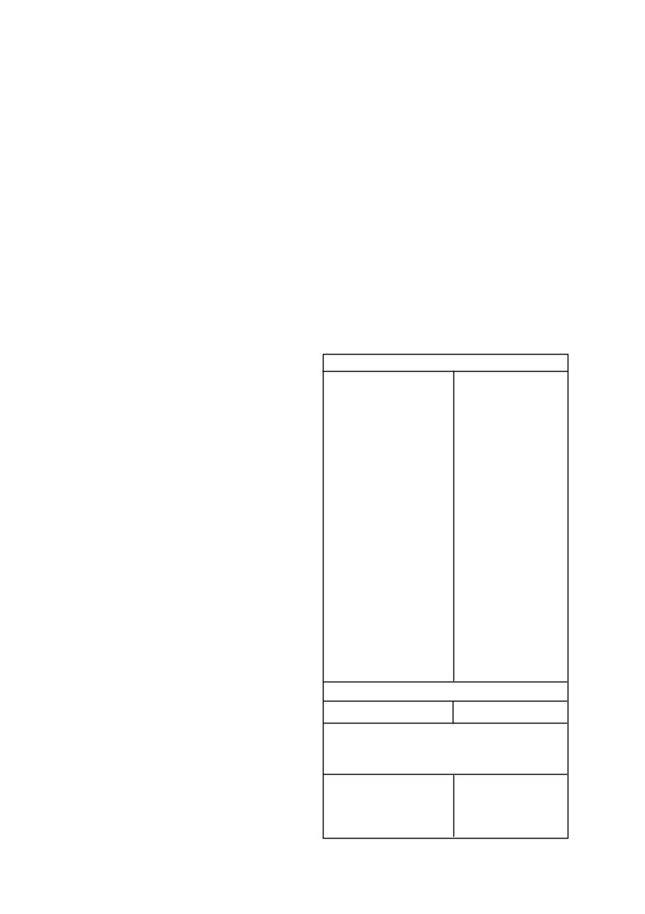

GESAPRIM SUPER
/ 2
e)
Waar die hoeveelheid
GESAPRIM SUPER
wat toegedien is
nie 1,7
l
/ha oorskry het nie kan die wagperiodes onder (b)
en (c) hierbo genoem tot 9 maande verkort word behalwe op
die sanderige gronde van die Noordwes Provinsie en Noord-
Westelike Vrystaat, wat 0 - 10 % klei bevat.
•
Bogenoemde wagperiodes geld slegs indien die korrekte
hoeveelheid
GESAPRIM SUPER
per grondsoort toegedien
is en normale of bogemiddelde reënval gedurende die seisoen
waarin die toediening gemaak is en daarna, voorgekom het.
•
Waar
GESAPRIM SUPER
toegedien is aan gronde wat
uitsit by natwording en kraak of krummel by uitdroging, soos
byvoorbeeld turfgronde, mag dit veel langer in die grond
aktief bly as wat deur bostaande wagperiodes aangedui word.
Gevolglik moet dit nie op sulke gronde gebruik word nie
indien gevoelige gewasse in die voorsienbare toekoms daarop
geplant mag word. Op sulke gronde mag vooropkombehan-
delings met
GESAPRIM SUPER
ook swak onkruidbeheer tot
gevolg hê.
•
Moet nie
GESAPRIM SUPER
op swak gedreineerde gronde
toedien of op gronde wat ‘n verdigtingslaag bevat nie, aan-
gesien dit triasien-gevoelige opvolg gewasse onder versuip-
toestande kan beskadig.
•
Moet nie
GESAPRIM SUPER
toedien aan ingeteelde ouer-
plante van mielie- en graansorghumbasters of aan proef- of
nuutvrygestelde mielie- of graansorghumkultivars sonder om
eers die verteenwoordiger van Syngenta/verspreider of die
saadverskaffer te raadpleeg nie.
•
Ongeveer 10 - 20 mm reën of besproeiing na toediening
is nodig om
GESAPRIM SUPER
te aktiveer vir optimale
resultate.
Indien reën wegbly vir langer as 2 weke kan sekere
onkruide ontkiem en sal swak of wisselvallige beheer verkry
word.
•
As gevolg van die lae adsorbsiekapasiteit van sandgronde
(0 - 15% klei), kan onkruiddoders tot sub-letale vlakke in die
boonste 50 mm van die grondprofiel verlaag word na die
voorkoms van deurdringende reën (> 25 mm per dag) met
gevolglike verswakte onkruidbeheer. Aanhoudende reën > 50
mm versprei oor 3 - 7 dae) sal ook lei tot verswakte onkruid-
beheer en moontlike gewasskade.
•
Moet nie
GESAPRIM SUPER
toedien onder stremmingstoe-
stande nie. Byvoorbeeld: versuiptoestande, droogte, baie
koue toestande, oormatige reën, swak kunsmis-toediening,
lae pH, ensovoorts. Swak beheer kan voorkom en gewas-
skade is ook moontlik.
•
Lande wat gebrand is moet eers deeglik bewerk word voor-
dat
GESAPRIM
SUPER
daarop toegedien word. As op die
grondoppervlakte kan lei tot die inaktivering van toegediende
onkruiddoders wat swak resultate tot gevolg kan hê.
•
As gevolg van die verskuiwing van behandelde bogrond en
loging van
GESAPRIM SUPER
op sandgronde kan sub-
optimale onkruidbeheer onder vloed besproeiing verwag word.
•
Onder abnormale klimaatstoestande, soos byvoorbeeld oor-
matige reën kort na plant en langdurige bewolkte toestande,
kan skade tydens vroeë na-opkoms toedienings (1 - 3 blaar
van gewas) voorkom.
•
Indien GRAMOXONE (L1174) by die spuitmengsel gevoeg
word, moet die volgende omstandighede vermy word:
a) Mielies onderworpe aan fisiologiese stremming.
b) Mielies met ‘n lae opbrengspotensiaal.
c) Winderige toestande.
d) Lande met ‘n ongelyke oppervlakte.
Waarskuwing:
Moontlike beskadiging van triasien sensi-
tiewe gewasse
•
Waar gronde met kalk behandel is om die pH te verhoog mag
die moontlikheid van gewas beskadiging dramaties verhoog
in gronde waar triasienes voorheen toegedien is. Dit gebeur
as gevolg van die triasien molekule wat op die klei kompleks
vervang word met kalsium katione en die triasien dus meer
beskikbaar word in die grondwater kompleks.
•
Geen triasien sensitiewe gewasse moet na kalk toedienings
geplant word nie. Dit is selfs van toepassing indien triasiene
teen wisselbou dosisse gespuit is in vorige jare. Slegs mie
lies
moet geplant word direk na kalk toedienings.
•
Triasien sensitiewe gewasse sluit in alle breëblaargewasse
soos die boon gewasse en sonneblomme asook alle klein-
graangewasse soos koring.
•
Hierdie waarskuwing waarborg egter nie dat geen skade aan
selfs mielies in die daaropvolgende aanplanting sal voorkom
nie aangesien groot volumes triasiene beskikbaar mag raak
afhangende van die volume kalk wat toegedien word en die
reënval wat kan voorkom.
Waarskuwing:
Moontlike
verhoogde effektiwiteit, fitotok-
sisiteit en verlengde nawerking
•
‘n Verhoging in die grond pH na vlakke bokant 7 skep toe-
stande waar verhoogde effektiwiteit en gepaardgaande verla-
ging in selektiwiteit kan voorkom. Hierdie verhoogde pH vlakke
kan ook verlengde grondnawerking tot gevolg hê wat veral
onder besproeiing die opvolg gewaskeuse mag beïnvloed.
•
Waar grond pH verstellings gedoen is, moet gelet word op die
gebruik van sulfoniel ureum onkruiddoders, triazolopirimidien
sulfonanilied onkruiddoders en imidasolinoon onkruiddoders
wat almal baie sensitief is vir grond pH fluktuasies.
Kontak u plaaslike SYNGENTA verteenwoordiger voordat
op enige bekalkings program besluit word om gewas
keuses en gewas beskermings programme te bespreek.
5. ONKRUIDE WAT BEHEER WORD
Die volgende onkruidsoorte word normaalweg deur
GESAPRIM
SUPER
beheer teen die toedieningshoeveelhede soos hier onder
aanbeveel:
Breëblaaronkruide
Acanthospermum australe
agtsadige kruipsterklits
Acanthospermum glabratum
vyfsadige kruipsterklits
Acanthospermum hispisdum
regopsterklits
Amaranthus deflexus
meerjarige misbredie
Amaranthus hybridus
gewone misbredie
Amaranthus spinosus
doringmisbredie
Amaranthus thunbergii
rooimisbredie
Bidens bipinnata
Spaanse knapsekêrel
Bidens pilosa
knapsekêrel
Chenopodium album
withondebossie
Chenopodium carinatum
groenhondebossie
Cleome monophylla
rusperbossie
Cleome rubella
mooinooientjie
Commelina benghalensis
wandelende Jood
Cosmos bipinnatus
kosmos
Crotalaria sphaerocarpa
mielie Crotalaria
Datura ferox
grootstinkblaar
Datura stramonium
stinkblaar
Galinsoga parviflora
knopkruid
Gisekia pharnaceoides
Gisekia
Hibiscus cannabinus
wildestokroos
Hibiscus trionum
terblansbossie
Nicandra physaloides
basterappelliefie
Physalis angulata
wilde-appelliefie
Portulaca oleracea
porslein
Richardia brasiliensis
tropiese Richardia
Schkuhria pinnata
kleinkakiebos
Tagetes minuta
kakiebos
Vigna vexillata
wilde-akkerboontjie
Grassoorte
Eleusine indica
jongosgras
Indien droë weerstoestande voortduur vir ‘n tydperk van
7 - 14 dae na ‘n vooropkombespuiting mag die volgende
on kruidsoorte nie na wense beheer word nie, veral op
swaarder grond:
Commelina benghalensis
Bengaalse wandelende
Jood
Cosmos bipinnatus
kosmos
Datura
spp
.
stinkblaar
Eleusine indica
jongosgras
6. GEBRUIKSAANWYSINGS
Gebruik slegs soos aanbeveel
6.1
VERENIGBAARHEID
